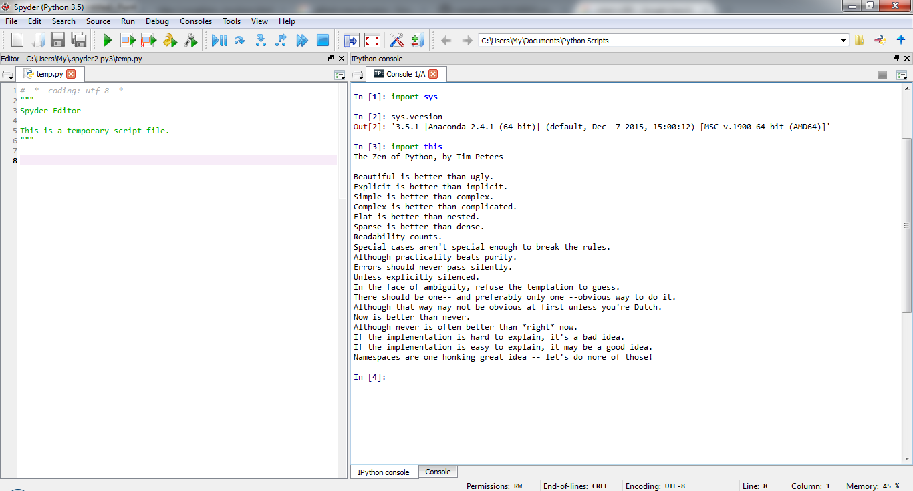

UECM3033 Assignment #1 Report
- Prepared by: Put your name here
- Tutorial Group: T2/T3
Task 1 -- setup a github repository
The reports, codes and supporting documents are uploaded to Github at:
https://github.com/your_github_id/UECM3033_assign1
Task 2 -- setup python
Put here the screen shot of file (python.png)

Task 3 -- modify and run Python script
In this section, please report:
- The hexadecimal value of your student ID.
- Write down the definite integrals that you have chosen.
- Write down your system of 10 linear equations.
Here are the examples of how to add equations in markdown:
last modified: change your date here